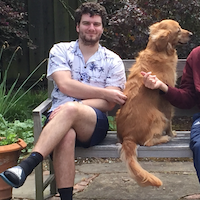

About Me

Hello,
I am a third year college student studying computer science at Brown University. My main area of interest is computer systems and computer security.
I am from Palo Alto, CA and currently reside in Providence, RI.
Outside of school, I like playing guitar and woodworking. I also work for my school as a systems administrator in the computer lab and as a head teaching assistant for the software exploitation course.
| Category | Favorite |
|---|---|
| Text Editor | vim |
| Character Encoding | us_ascii |
| Programming Language | C |
| Browser | Firefox |
| Corporation | 3M |
| Historical Figure | Socrates |
| Substance | Benzene |
| Animal | Dog |
| Timepiece | Casio F91-W |
| File Format | .xml |
| Music Genre | Blues |
| Unix Program | man |
| Font | Computer Modern Roman |
| IETF RFC | RFC 1945 |
| Standards Body | ANSI |
| Free Service | Wikipedia |
| Dark Wood | Walnut |
| Light Wood | Maple |
| Numerical Constant | e |
| SI Unit | Ampere |
| Phenomenon | Magnetism |
| Date Format | Tue Feb 5 23:01:16 EST 2019 |
| Essay | This is Water |
| Band | Tedeschi Trucks Band |
| Metal | Copper |
Below is my email and fingerprint of my public PGP key if you wish to contact me. The actual key is here
pub rsa4096 2019-12-22 [SC]
FDF650B7E5C6EE175E321F7BDE124EA87720AE90
uid [ultimate] Brian Tracy <brian.tracy33@gmail.com>
sub rsa4096 2019-12-22 [E]